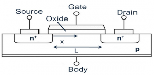
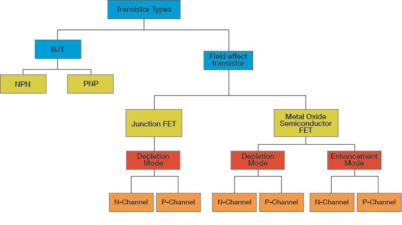
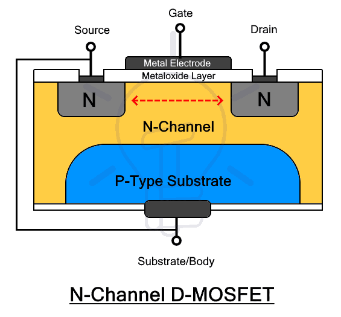
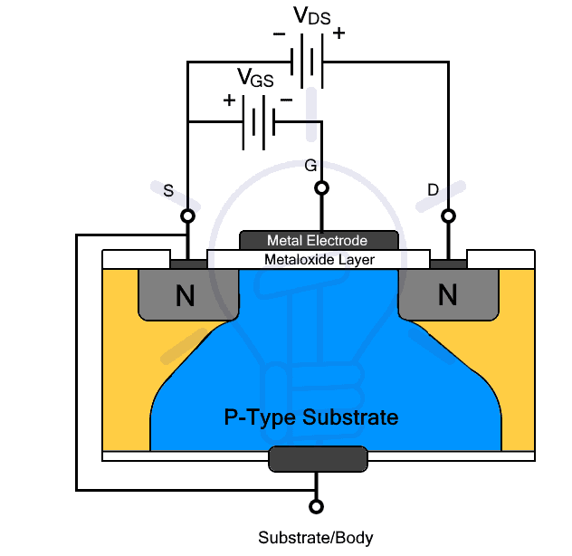
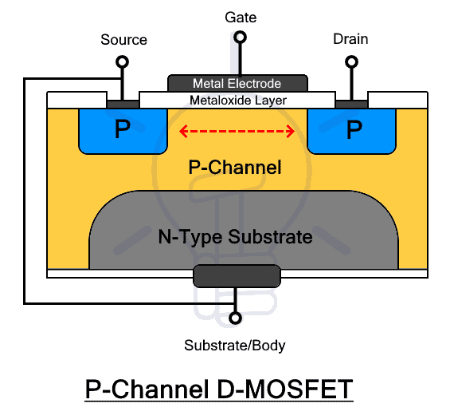
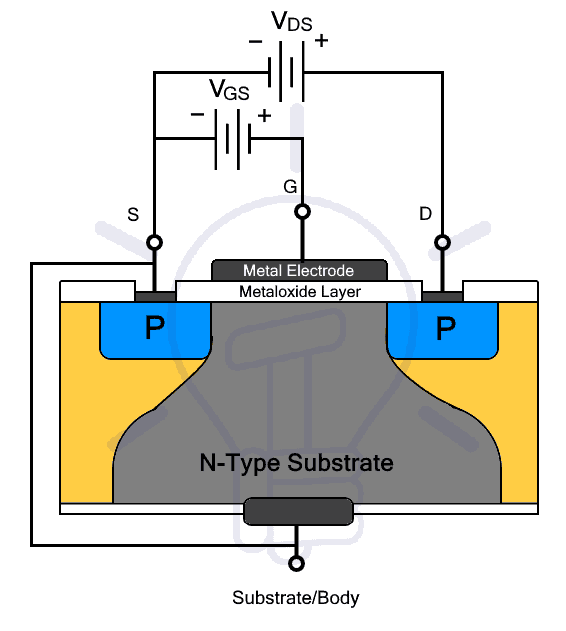
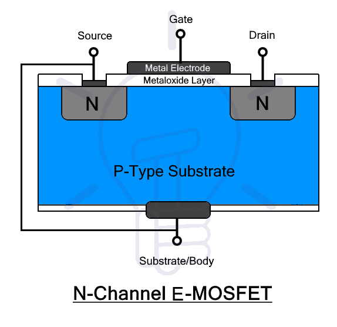
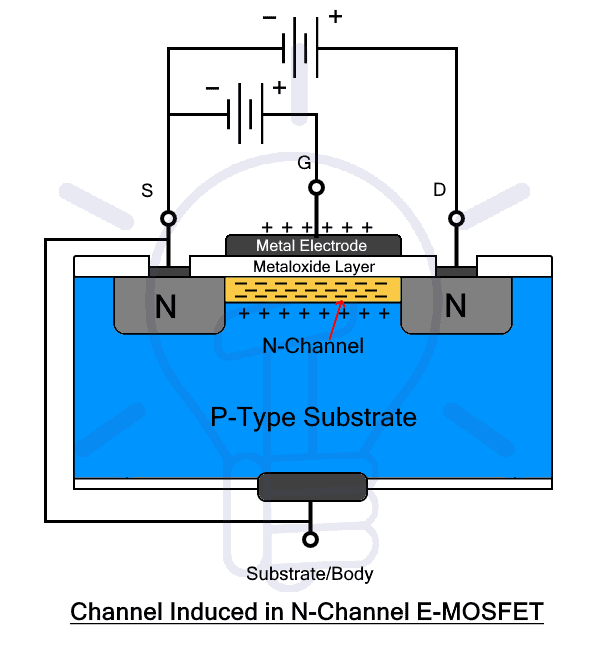
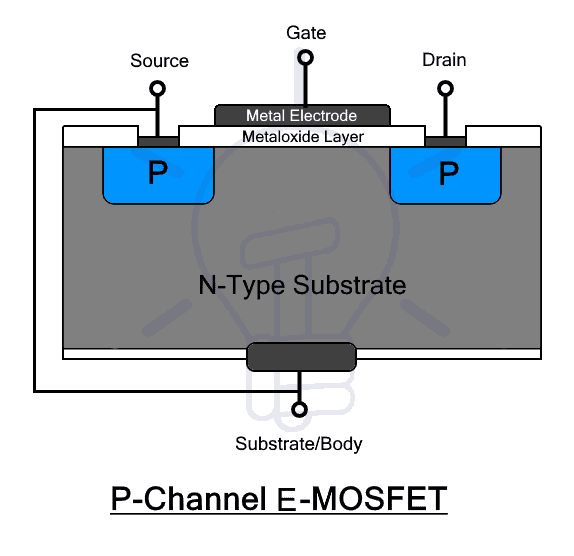
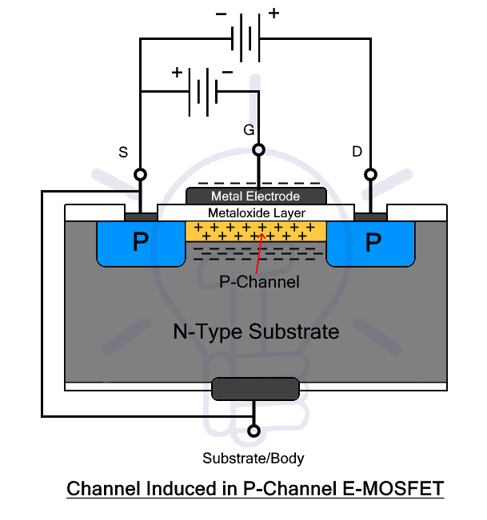

MOSFETs#
This paper has been created through collaboration with:
Amir Parsa Hosseini Kakhk
Contact address: seyedamirparsa.hosseinikakhk@mail.um.ac.ir
Introduction#
Metal-Oxide-Semiconductor Field-Effect Transistors, or MOSFETs, are integral components in modern electronics, widely recognized for their efficiency and versatility. As voltage-controlled devices, MOSFETs differ significantly from traditional bipolar junction transistors (BJTs). They utilize an insulated gate structure, enabling extremely high input impedance and low power requirements, which makes them ideal for a variety of applications such as amplification, switching, and digital logic circuits.
A MOSFET is a four-terminal device having source(S), gate (G), drain (D) and body (B) terminals. In general, The body of the MOSFET is in connection with the source terminal thus forming a three-terminal device such as a field-effect transistor.

MOSFETs types#
MOSFETs operate in two main configurations: Enhancement Mode and Depletion Mode, with N-channel and P-channel variations. N-channel MOSFETs are particularly popular due to their superior electron mobility, which translates to faster operation and higher efficiency. These transistors work by applying a voltage to the gate terminal, which modulates the conductivity of a channel between the drain and source terminals, allowing or blocking current flow. This principle enables MOSFETs to function as switches or amplifiers with remarkable precision and speed.

Depletion Mode:#
The Depletion type MOSFET or D-MOSFET is a type of MOSFET that has a channel constructed during the process of fabrication. In other words, it has a channel even when there is no voltage applied to it. Therefore, it can conduct current between source and drain when the gate-source voltage VGS = 0 volts. Due to this reason, it is also known as “Normally ON” MOSFET.
Connecting the gate-source terminal in reverse bias will deplete the channel of the charge carrier thus the name depletion MOSFET. It reduces the width of the channel until it completely vanishes. At this point, the D-MOSFET stops conduction and this VGS voltage is known as VTH threshold voltage.
If Gate and source is connected in forward bias and the VGS is increased, more majority carriers will get induced in the channel and its width will increase. It will result in increasing the current flow between drain and source. This is why the D-MOSFET can work in both depletion and enhancement mode.
The D-MOSFET can be ‘N-channel D-MOSFET’ or ‘P-channel D-MOSFET’ depending on the channel being used. The type of channel also affects its biasing as well as its speed and current capacities.
N-Channel D-MOSFET#
In N-channel D-MOSFET, the source and drains electrode is placed on small N-type layers. While the gate electrode is placed on top of an insulating metal oxide layer that electrically insulates it from the channel beneath it. The channel made for N-type material is fabricated on top of a P-type substrate.

The channel as it is made of N-type material consists of electrons as charge carriers. The voltage at the gate produces an electric field that affects the flow of these charge carriers.

When the gate is connected in reverse bias i.e. negative voltage VGS < 0 volt is applied, the holes from the P-substrate will attract towards the gate, depleting it of the electrons and reduce the channel size. At certain negative VGS the MOSFET will stop conduction as there will be no channel. This VGS is threshold voltage Vth. N-channel MOSFET has –Vth.
While increasing VGS will enhance (increase) its conductivity i.e. the drain current ID will increase with the drain-source voltage VDS. However, this works in the ohmic region. When the VDS reaches the pinch-off voltage Vp, the IDS become saturated IDSS and the current stops increasing. This mode is used for switching applications.
Operating Regions of N-Channel D-MOSFET#
Cutoff Region: In this region, the gate-source voltage VGS ≤ -Vth. There is no drain current ID = 0 regardless of the value of VDS. The MOSFET is switched off.
Saturation Region: In this region, the VGS > -Vth and the VDS > Vp . The MOSFET allows maximum drains current IDSS which depends on the VGS.
Linear or Ohmic Region: In this region, VGS > -Vth and the VDS < Vp. the MOSFET acts as an amplifier. In this region, the current ID increases with the VDS while its amplification depends on the VGS as shown in the VI characteristics.
P-Channel D-MOSFET#
The P-channel D-MOSFET has the same construction as an N-channel except for the drain, source electrodes lie on P-type layers. and the channel is made of P-layer over an N-type substrate. The charge carriers used are holes. The holes have one disadvantage over electrons. They are quite heavier than electrons and therefore can cause it to lose some speed in operation.

Under normal conditions, it can conduct current between its source and drain as long as there is a voltage between them. the gate voltage can affect the channel width to increase or decrease it.

When a positive VGS is applied at its gate, the electric field will cause to attract the electrons from the N-type substrate that combines with the holes thus depleting the channel of charge carriers. It reduces the width of the channel and the amount of current. at a certain point, the VGS completely eliminates the channel and stops the flow of current.
Therefore, P-channel D-MOSFET has a positive threshold voltage i.e. it switches off when positive VGS is applied and switches on when there is no VGS. Applying negative voltage will induce more holes into the channel causing it to increase or enhance its current conduction.
Operating Regions of P-Channel D-MOSFET#
Cutoff Region: In this region, the gate-source voltage VGS = +Vth. There is no drain current ID = 0 regardless of the value of VDS. The MOSFET is switched off.
Saturation Region: In this region, the VGS < +Vth and the VDS > Vp. The MOSFET allows maximum drains current IDSS which depends on the level of VGS.
Linear or Ohmic Region: In this region, VGS < +Vth and the VDS < Vp. the MOSFET acts as an amplifier. In this region, the current ID increases with the VDS while its amplification depends on the VGS as shown in the VI characteristics.
Enhancement Mode:#
Enhancement MOSFET or E-MOSFET is a type of MOSFET that does not have a channel during its fabrication. Instead, the channel is induced in the substrate by applying the voltage through its gate electrode. The voltage enhances its conduction ability hence the name.
The E-MOSFET does not conduct and remains switched OFF when there is no voltage at its gate. It is why it is also known as “Normally OFF” MOSFET. By applying a forward voltage between the gate and source, charge carriers are induced in the substrate that produces a channel for the conduction of current between the source and drain.
Applying voltage above threshold voltage enhances the width of the channel and increases the current flow therefore it is named enhancement MOSFET.
The E-MOSFET is also divided into N-Channel and P-Channel E-MOSFET.
N-Channel E-MOSFET#
The N-Channel E-MOSFET has the same structure as D-MOSFET except there is no channel during manufacturing. The channel is induced by the application of a voltage across its gate.

N-channel E-MOSFET will not conduct current between its source and drain terminal when the VGS = 0 volts. Because there is no channel to allow current flow. Applying a positive voltage +VGS to the gate produces an electric field beneath the gate layer. It results in attracting the electrons from the P-substrate and pushing back holes away from the insulating layer. A channel in induced which allows the current between the source and drain.

The VGS at which the channel is induced is called Vth threshold voltage and increasing the voltage above Vth causes to enhance the channel width.
Operating Regions of N-Channel E-MOSFET#
Cutoff Region: In this region, the gate-source voltage VGS ≤ 0v. There is no drain current ID = 0 regardless of the value of VDS. It operates as a switch.
Saturation Region: In this region, the VGS > 0v and the VDS > VGS. The MOSFET allows maximum drains current IDSS which depends on the level of VGS.
Linear or Ohmic Region: In this region, VGS > 0 and the VDS < VGS. the MOSFET acts as an amplifier. In this region, the current ID increases with the VDS while its amplification depends on the VGS as shown in the VI characteristics.
P-Channel E-MOSFET#
P-channel E-MOSFET has the same structure as P-channel D-MOSFET except for the absence of channel. There is no channel during its construction. It is induced by applying VGS.

When –VGS is applied to the gate, positive charges (holes) gather beneath the insulating layer and the electrons are pushed back. The holes accumulate together to form a channel between the source and drain. Now, if the voltage between source and drain is applied, it will start to conduct current.

Same as N-channel, it does not conduct when the VGS = 0 V. reducing the voltage below Vth, the channel width increases, allowing more current to flow through it.
Operating Regions of N-Channel E-MOSFET#
Cutoff Region: In this region, the gate-source voltage VGS ≥ 0v. There is no drain current ID = 0 regardless of the value of VDS. It operates as a switch.
Saturation Region: In this region, the VGS < 0v and the VDS > VGS. The MOSFET allows maximum drains current IDSS which depends on the level of VGS.
Linear or Ohmic Region: In this region, VGS < 0 and the VDS < VGS. The MOSFET acts as an amplifier. In this region, the current ID increases with the VDS while its amplification depends on the VGS as shown in the VI characteristics.
The following table shows the status of all four types of MOSFET at different levels of Gate-Source voltage VGS
MOSFET Type |
VGS = +ve |
VGS = 0 |
VGS = -ve |
|---|---|---|---|
N-Channel D-MOSFET |
ON |
ON |
OFF |
P-Channel D-MOSFET |
OFF |
ON |
ON |
N-Channel E-MOSFET |
ON |
OFF |
OFF |
P-Channel E-MOSFET |
OFF |
OFF |
ON |
The symbols and basic construction for both configurations of MOSFETs:#

The four MOSFET symbols above show an additional terminal called the Substrate and is not normally used as either an input or an output connection but instead it is used for grounding the substrate.
Usually in discrete type MOSFETs, this substrate lead is connected internally to the source terminal. When this is the case, as in enhancement types it is omitted from the symbol for clarification.
The line in the MOSFET symbol between the drain (D) and source (S) connections represents the transistors semiconductive channel. If this channel line is a solid unbroken line then it represents a “Depletion” (normally-ON) type MOSFET as drain current can flow with zero gate biasing potential.
If the channel line is shown as a dotted or broken line, then it represents an “Enhancement” (normally-OFF) type MOSFET as zero drain current flows with zero gate potential. The direction of the arrow pointing to this channel line indicates whether the conductive channel is a P-type or an N-type semiconductor device.
conclusion#
In summary, MOSFETs are versatile semiconductor devices crucial to modern electronics, available in various configurations to suit different applications. Enhancement-mode and depletion-mode MOSFETs operate on opposite principles of gate voltage to control conduction, providing flexibility in circuit design. Similarly, n-channel and p-channel MOSFETs cater to different current flow directions and voltage requirements, expanding their usability across diverse systems. Understanding these distinctions and their operational principles allows engineers to select the optimal MOSFET type for specific needs, enabling efficient and reliable electronic designs.
Resources#
https://www.electronics-tutorials.ws/transistor/tran_6.html
https://www.electronics-lab.com/article/mosfet-amplifier/
https://www.electronics-tutorials.ws/amplifier/mosfet-amplifier.html
https://www.elepcb.com/blog/mosfet-transistors/